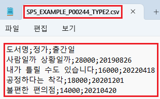

[GridView] CSV 다운로드 시 다운로드할 데이터 출처 설정하기
1개요
GridView의 데이터를 CSV로 다운로드 시 다운로드할 데이터를 지정하는 예제입니다. GridView의 함수 'saveCSV'의 옵션 'type'으로 다운로드할 데이터를 지정합니다.
옵션의 설명은 아래와 같습니다. - type : [default: 1, 0] 사용할 데이터. 0: value 값 사용. 1: 화면의 출력 값 사용.
다운로드할 데이터를 화면의 출력값으로 지정하고 구분자를 ','(쉼표)로 설정하고자 할 때, 출력값에 ','(쉼표)를 제거하는 옵션을 지정할 수 있습니다.
관련 옵션은 아래와 같습니다.
- type : [default: 1, 0] 사용할 데이터. 0: value 값 사용. 1: 화면의 출력 값 사용.
- delim : [default: ';'] CSV 파일에서 데이터를 구분할 구분자
- removeQuotation : [default: 0, 1] value에 ','(쉼표/comma)의 제거 여부 (0 : 유지, 1 : 제거)
2구현된 기능
CSV 다운로드 - (기본 값) 화면의 출력 값으로 다운로드
CSV 다운로드 - value로 다운로드
3예제 테스트 방법
3.1CSV 다운로드 - (기본 값) 화면의 출력 값으로 다운로드
- STEP1. 초기 상태 확인하기
실행된 GridView의 컬럼 '정가', '출간일'의 셀을 더블 클릭하여 화면의 출력 값과 value를 확인합니다.
[브라우저(Chrome) 실행 예시]

컬럼 '정가'의 셀을 더블 클릭하여 value를 확인합니다.
화면 출력 시 value의 3자리 마다 ','가 표시됩니다.
화면 출력 값 : '28,000'
실제 value : '28000'
[브라우저(Chrome) 실행 예시 - 첫 번째 로우의 컬럼 '정가'의 value]
컬럼 '출간일'의 셀을 더블 클릭하여 value를 확인합니다.
화면 출력 시 '연', '월', '일' 마다 구분자 '-'가 표시됩니다.
화면 출력 값 : '2019-08-26'
실제 value : '20190826'
[브라우저(Chrome) 실행 예시 - 첫 번째 로우의 컬럼 '출간일'의 value]
- STEP2. 버튼 CSV 다운로드 - (기본 값) 화면의 출력 값으로 다운로드를 클릭합니다.
'SP5_EXAMPLE_P00244_TYPE1.csv'가 다운로드 됩니다.
- STEP3. 실행된 결과를 확인합니다.
다운로드 된 'SP5_EXAMPLE_P00244_TYPE1.csv'을 메모장으로 실행합니다.
컬럼 간 구분자는 ';'로 설정되고 데이터는 화면에 출력된 값으로 다운로드 됩니다.
[다운로드된 CSV 파일 예시 - 메모장]
3.2CSV 다운로드 - value로 다운로드
- STEP1. 초기 상태 확인하기
실행된 GridView의 컬럼 '정가', '출간일'의 셀을 더블 클릭하여 화면의 출력 값과 value를 확인합니다.
[브라우저(Chrome) 실행 예시]
컬럼 '정가'의 셀을 더블 클릭하여 value를 확인합니다.
화면 출력 시 value의 3자리 마다 ','가 표시됩니다.
화면 출력 값 : '28,000'
실제 value : '28000'
[브라우저(Chrome) 실행 예시 - 첫 번째 로우의 컬럼 '정가'의 value]
컬럼 '출간일'의 셀을 더블 클릭하여 value를 확인합니다.
화면 출력 시 '연', '월', '일' 마다 구분자 '-'가 표시됩니다.
화면 출력 값 : '2019-08-26'
실제 value : '20190826'
[브라우저(Chrome) 실행 예시 - 첫 번째 로우의 컬럼 '출간일'의 value]
- STEP2. 버튼 CSV 다운로드 - value로 다운로드를 클릭합니다.
'SP5_EXAMPLE_P00244_TYPE2.csv'가 다운로드 됩니다.
- STEP3. 실행된 결과를 확인합니다.
다운로드 된 'SP5_EXAMPLE_P00244_TYPE2.csv'을 메모장으로 실행합니다.
컬럼 간 구분자는 ';'로 설정되고 데이터는 value로 다운로드 됩니다.
[다운로드된 CSV 파일 예시 - 메모장]

4구현 예시
4.1CSV 다운로드 시 다운로드할 데이터를 value로 지정하기
- 원하는 시점에 엑셀 다운로드 스크립트를 작성합니다.
[소스 코드 예시]
//예제 파일의 스크립트 "scwin.btn_ex2_onclick"를 참고하세요. var jsnOptions; jsnOptions = { fileName: "SP5_EXAMPLE_P00244_TYPE2.csv", //파일명 type: "0" //다운로드할 데이터 - value }; //GridView 'grd_exam1'의 데이터를 CSV 형식으로 다운로드합니다. grd_exam1.saveCSV(jsnOptions);
5주요 API
saveCSV( options )
options.type
options.delim
options.removeQuotation
6참고 문서
[웹스퀘어5 SP5 개발 가이드] GridView
링크 : https://docs1.inswave.com/sp5_user_guide/86bdcf48029b958b
[웹스퀘어5 SP5 개발 가이드] GridView → CSV 다운로드
링크 : https://docs1.inswave.com/sp5_user_guide/bc10c1b82c9a2a0b#06e1b5f0872cb960